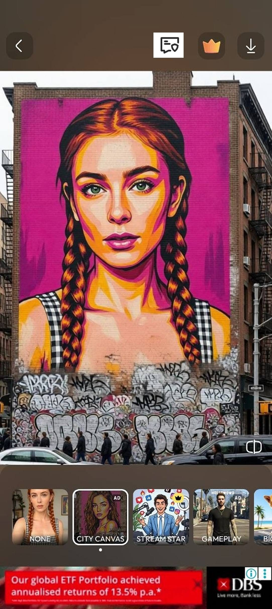
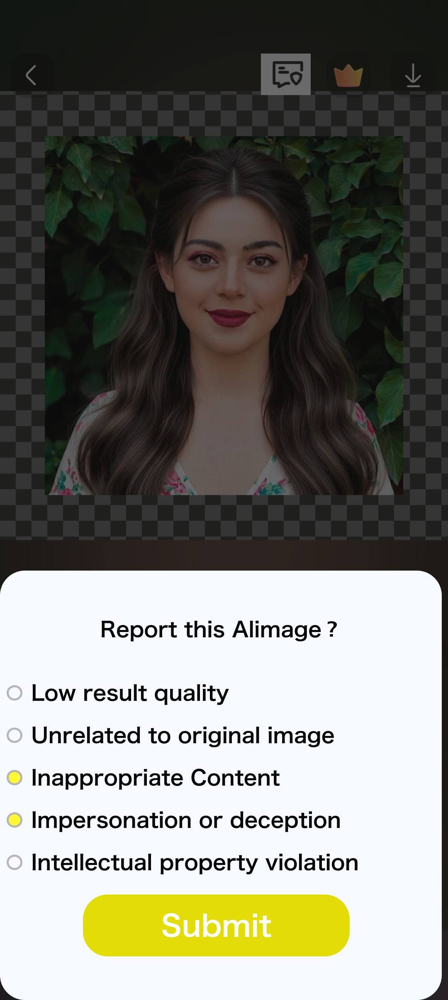
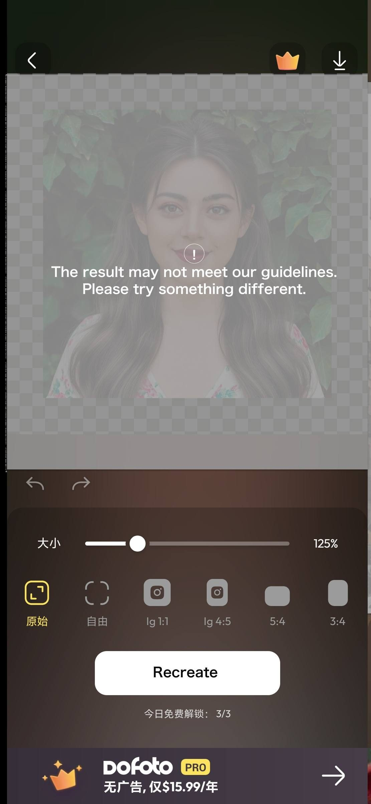
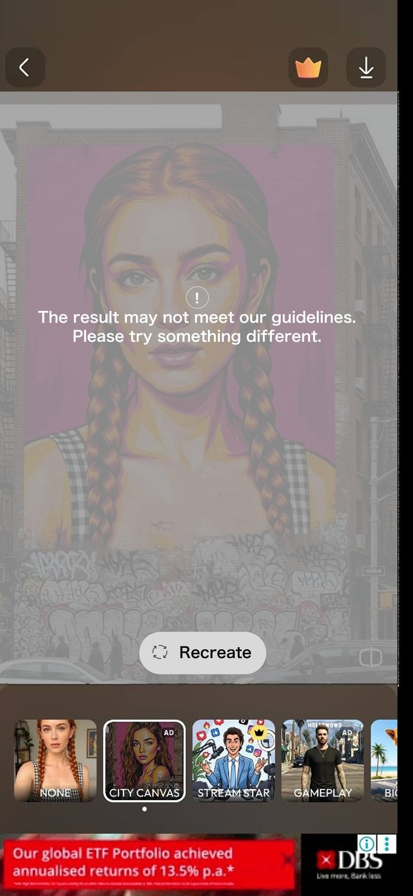
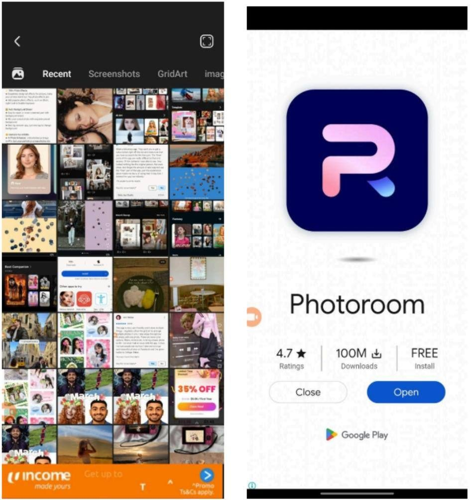
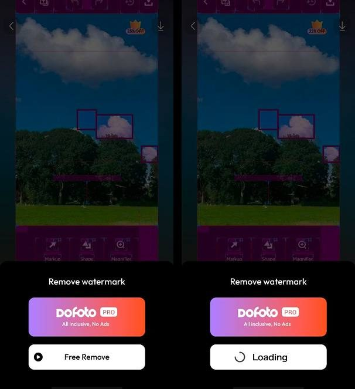

| 指标名称 | 作用 | 分子 | 分母 | 备注 |
|---|---|---|---|---|
| 举报入口点击率 | 次要：衡量反馈入口曝光后的使用 | 点击反馈入口的次数 | 进入两功能结果页的次数 | AI Expand + AI Art 合计 |
| 反馈提交率 | 次要：衡量举报弹窗的完成度 | 点击 Submit 提交反馈的次数 | 打开举报弹窗的次数 | — |
| 合规举报占比 | 主指标：衡量被判定不合规的结果比例 | 命中合规判定的提交次数 | 提交反馈总次数 | — |
| 遮罩触发率 | 主指标：衡量不合规内容拦截规模 | 触发遮罩的结果图数 | 生成结果图总数 | 含用户举报 + 服务器自动鉴黄 |
| 结果页保存率 | 护栏：避免反馈入口 / 遮罩影响正常保存转化 | 结果页 Save 成功人数 | 进入结果页人数 | 上线前 7 日 vs 后 7 日 |
| 编辑页跳出率 | 主指标：衡量去插屏广告对体验的改善 | 编辑页内完成一次操作的人数 | 进入编辑页人数 | 上线前 7 日 vs 后 7 日 |
| 低分差评占比 | 次要：验证去广告对评分的滞后影响 | 1-2 星差评数 | 总评价数 | 按周观察，滞后指标 |
| 指标结果 | 后续方向 |
|---|---|
| 合规举报占比 / 遮罩触发率处于合理区间，结果页保存率无明显下降 | ✅ 需求达成：合规能力上线且未伤害正常体验，维持现状，持续观察长期趋势 |
| 结果页保存率显著下降 | ⚠️ 入口 / 遮罩干扰了正常体验，排查入口位置 / 误触 / 遮罩误伤，迭代优化 |
| 合规举报占比接近 0 | ⚠️ 入口曝光不足或用户无感知，评估入口可见性，考虑是否前置或调整引导 |
| 编辑页跳出率 / 低分差评占比无明显改善 | ⚠️ 广告并非影响体验的主因，结合评论关键词重新定位主要负反馈来源 |
| 编辑页跳出率下降、低分差评占比下降 | ✅ 去插屏广告对留存和评分有正向贡献，评估是否进一步精简其余广告位 |
| 模块 | 一级 event | 二级 content | 说明 |
|---|---|---|---|
| AIGC 违规举报 | AIReport | EntryClick | 点击 AI 生成图的举报入口 |
| Submit_[选项序号] | 在 AI 生成图举报弹窗中，点击 Submit 时上报此时用户选中的选项，选项序号=如下数字[选项序号]： 1 = Low quality result 2 = Unrelated to original image 3 = Inappropriate content 4 = Impersonation or deception 5 = Intellectual property violation 若多选，直接拼接，例如：Submit_13 | ||
| ViolationMask | Show_Report | 由于用户手动举报，展示内容违规遮罩 | |
| Show_Auto | 由于服务器返回鉴黄不通过，展示内容违规遮罩 | ||
| Recreate | 在遮罩效果页面上，点击 Recreate | ||
| Switch | 在遮罩效果页上，点击切换其他效果 | ||
| Cancel | 在遮罩效果页上，点击叉号（关闭效果编辑页返回编辑页主页） |